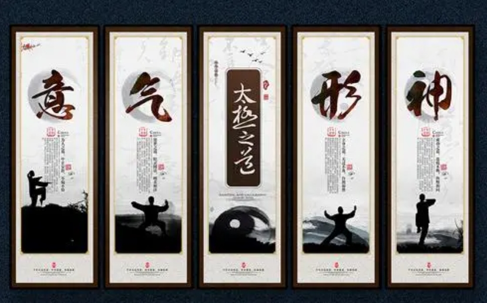
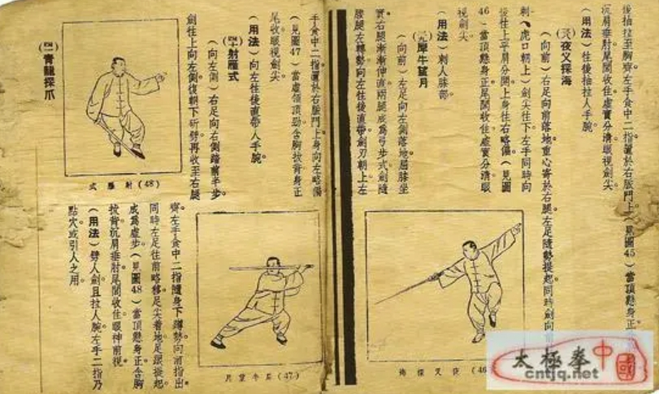
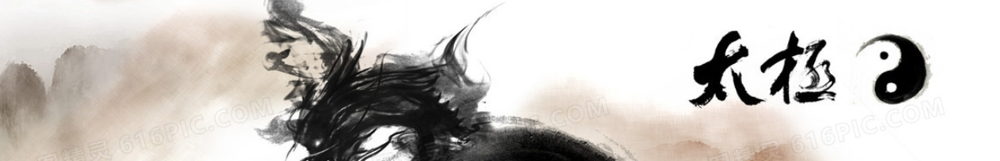

| 中文名 | 太极拳 |
| 批准时间 | 2006年 |
| 非遗级别 | 人类非遗 |
| 申报地区 | 河北省永年县、河南省焦作市 |
| 遗产类别 | 杂技与竞技 |
| 代表人物 | 施承志、陈正雷、杨振铎、李秉慈、孙婉容等 |
历史渊源

名称由来
太极拳属武术一大拳系。太极拳这个名称是因为拳法变幻无穷，遂用中国古代的“阴阳”、“太极”这一哲学理论来解释拳理而被命名的。
“太极”一词源出《周易·系辞》：“易有太极，是生两仪。”“太”就是大的意思，“极”就是开始或顶点的意思。宋朝周敦颐在《太极图说》中第一句话就是“无极而太极”，意即“太极”是产生万物的本源，含有至高、至极、绝对、唯一之意。太极拳取的也是这个意思。
太极拳一词，最早见于署名王宗岳的《太极拳论》。武禹襄的长甥李亦畲于光绪七年将王宗岳武禹囊的拳论和自身体会，手书三册传世，俗称“老三本”。这是迄今发现最早的太极拳理论著述。
